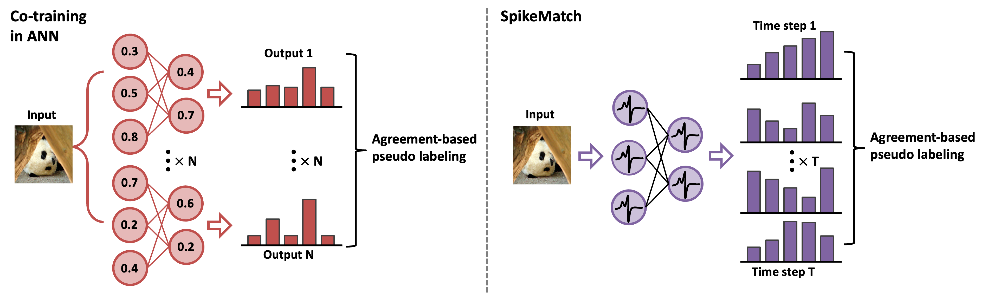
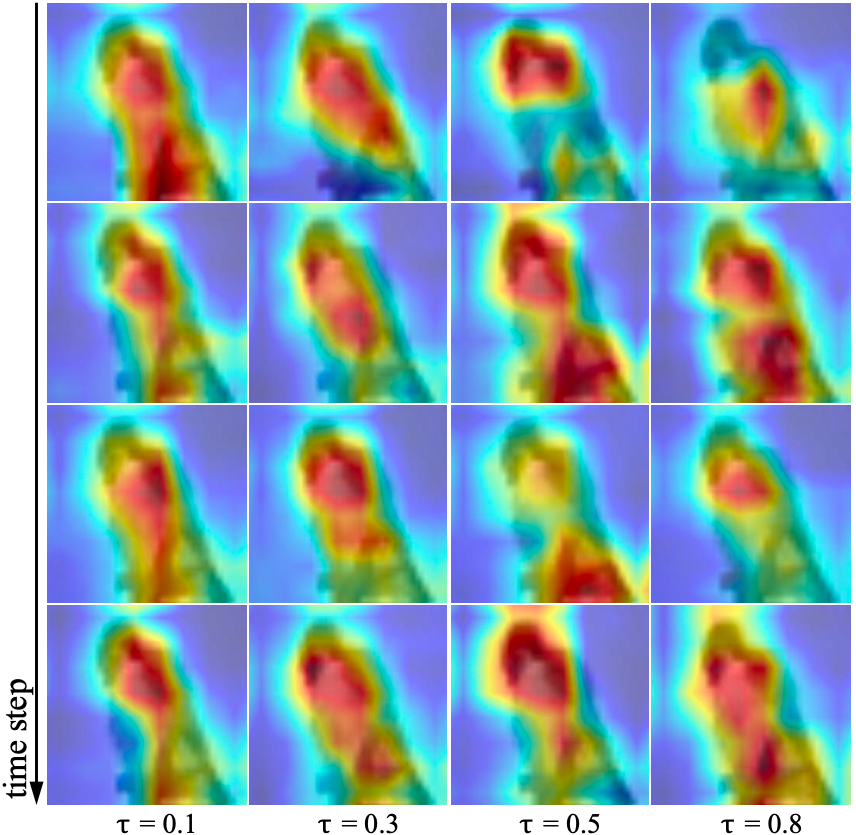
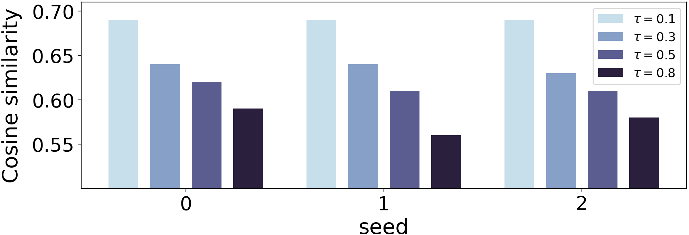
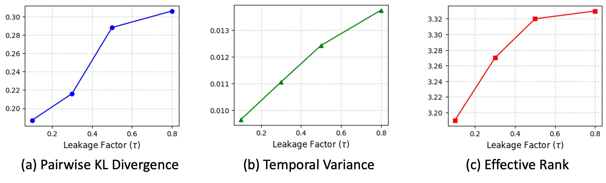
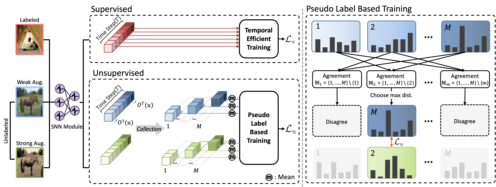

Overview
We introduce SpikeMatch, an agreement-based pseudo-labeling method that treats the temporal outputs of an SNN model as multiple predictions within a co-training framework. By simply increasing the leakage factor, addresses common challenges in semi-supervised learning, such as confirmation bias, by effectively leveraging distinct semantic features.
Diverse predictions of SNNs

Unlike conventional ANN-based models that require extra parameters to generate multiple views, SNNs naturally produce diverse predictions across time steps through binary spike signals. SpikeMatch leverages this temporal dynamic to enable agreement-based pseudo-labeling, offering a parameter-free approach to diversity and robustness.
Motivation
We conduct an empirical analysis of the leakage factor in Leaky Integrate-and-Fire (LIF) neurons. Our results show that higher leakage from the previous time step leads to more diverse predictions, which are crucial for learning distinctive semantic features in semi-supervised settings with limited labeled data.
Discriminative features
We visualize the temporal feature responses using the Spiking Activation Map (SAM). As the leakage factor increases, the SAM outputs become more diverse across time steps, providing the model with richer feature variations that facilitate learning of class-discriminative representations.

Spiking Activation Map (SAM) on leakage factor and time step variance.
Cosine similarity
Without explicit constraints, a higher leakage factor consistently lowers cosine similarity, indicating more diverse temporal features.

Each column represents the average of 6 cosine similarity values computed across 4 time steps for each τ, at seeds 0, 1, and 2. The cosine similarity is calculated from 6 combinations of features from the 4 time steps at the last layer.
Other diversity metrics

To validate that a higher leakage factor (τ) improves temporal diversity, we analyze CIFAR-10 using KL divergence, temporal variance, and effective rank. All three metrics consistently increase as τ grows, confirming more diverse and distinct temporal features.
Co-training framework

(left): A labeled image (red) and unlabeled images (blue), (green) pass through the SNN, producing M averaged predictions. Weakly augmented outputs guide strong ones via agreement-based pseudo-labeling.
(right): A pseudo-label (green) is adopted only when the remaining M−1 predictions (blue) agree on the same class, with the highest-confidence output selected.
SpikeMatch treats temporal outputs as multiple views within one SNN. Agreement among weakly augmented predictions generates reliable pseudo-labels for strong augmentations, enabling co-training without extra parameters.
Experimental results
We evaluate SpikeMatch on CIFAR-10, STL-10, ImageNet, and neuromorphic datasets, demonstrating its effectiveness across diverse benchmarks for semi-supervised image classification.
Results on CIFAR-10 & CIFAR-100 under various label conditions
SpikeMatch consistently outperforms existing semi-supervised learning methods across different label regimes on CIFAR-10 and CIFAR-100. Even with extremely few labeled samples per class, our approach achieves higher accuracy and stability by leveraging temporal agreement for reliable pseudo-labeling.
| Dataset | CIFAR-10 | CIFAR-100 | ||||
|---|---|---|---|---|---|---|
| Labels | 4 | 25 | 400 | 4 | 25 | 100 |
| UDA | 69.72 |
87.76 |
90.06 |
44.66 |
60.35 |
66.51 |
| FixMatch | 67.97 |
86.84 |
89.40 |
38.39 |
58.40 |
64.75 |
| AdaMatch | 82.13 |
87.15 |
89.44 |
44.54 |
59.52 |
65.86 |
| FreeMatch | 85.65 |
87.86 |
89.64 |
46.49 |
62.01 |
67.10 |
| SoftMatch | 84.27 |
87.97 |
89.91 |
45.99 |
61.97 |
67.35 |
| RegMixMatch | 82.59 |
87.36 |
90.08 |
38.49 |
60.27 |
66.69 |
| SpikeMatch w/o TET | 87.98 |
88.13 |
91.00 |
47.45 |
63.18 |
69.37 |
| SpikeMatch | 88.13 |
88.36 |
90.93 |
47.52 |
63.34 |
69.50 |
Accuracy (%) on CIFAR-10 and CIFAR-100 of 3 different random seeds. The best results is in bold.
ImageNet with 100 labels per class
On ImageNet with SEW-ResNet-50, SpikeMatch outperforms SoftMatch, showing strong effectiveness even with large-scale data and deep backbones.
| Methods | ||
|---|---|---|
| Top-1 | Top-5 | |
| SoftMatch | 45.66 | 71.44 |
| SpikeMatch | 49.68 | 75.07 |
DVS-CIFAR-10 with 1% labels
We evaluate SpikeMatch on the event-based CIFAR10-DVS dataset, preserving the temporal structure of events and capturing their intrinsic diverse patterns.
| DVS-CIFAR-10 | |
|---|---|
| FreeMatch | 36.40 |
| SoftMatch | 37.40 |
| SpikeMatch | 49.80 |
STL-10 with 4 labels per class
| Seed | ||||
|---|---|---|---|---|
| 0 | 1 | 2 | Mean | |
| FreeMatch | 56.73 | 49.94 | 57.00 | 54.55 |
| SoftMatch | 58.40 | 50.58 | 58.14 | 55.70 |
| SpikeMatch | 62.36 | 64.69 | 61.36 | 62.80 |
On the more challenging STL-10 dataset with high-resolution images, SpikeMatch outperforms SoftMatch while maintaining stable performance.
Analysis
Energy and label efficiency
On CIFAR-10 with only one label per class, SpikeMatch surpasses state-of-the-art ANN methods while preserving over 20× higher energy efficiency, making it practical for low-label, low-power settings.
| Seed | ||
|---|---|---|
| Accuracy | Energy Efficiency | |
| FixMatch (ANN) | 78.69 |
1X |
| SoftMatch (ANN) | 79.04 |
1X |
| SpikeMatch | 81.92 |
20.8X |
Accuracy (%) and energy consumption (including MAC) on CIFAR10 with only one label per class.
Leakage configuration
| Leakage factor | |||||
|---|---|---|---|---|---|
| 0 | 0.1 | 0.3 | 0.5 | 0.8 | |
| SoftMatch | 79.71 | 84.27 | 84.41 | 84.27 | 85.52 |
| SpikeMatch | 80.16 |
85.43 |
86.33 |
88.13 |
88.17 |
Both SoftMatch and SpikeMatch benefit from a higher leakage factor, but the performance gain is more pronounced in SpikeMatch. Our agreement-based approach more effectively exploits subtle features from temporal diversity, resulting in greater improvements for semi-supervised learning.
Visualization of effectiveness of SpikeMatch
Conclusion
In this work, we presented SpikeMatch, a semi-supervised learning (SSL) framework for SNNs that utilize their temporal dynamics via the leakage factor to achieve diverse pseudo-labeling within a co-training framework. By utilizing agreement among multiple predictions from a single SNN, SpikeMatch produces reliable pseudo-labels from weakly augmented unlabeled samples to train on strongly augmented ones, effectively mitigating confirmation bias and enhancing feature learning with limited labeled data. Experiments show that SpikeMatch outperforms existing SSL methods adapted to SNNs across benchmarks.
Citation
If you use this work or find it helpful, please consider citing:
@misc{}